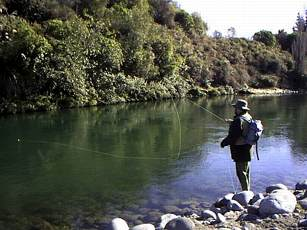

君よ知るや南の国
タウポ湖周辺河川での遡上鱒の釣り （３）
■ turigu.com通信 ■ [Vol.40] 2002.10.17 より
皆様、ニュージーランド北島のハミルトンからお届けします「君よ知るや南の国」です。
ハミルトンは桜が満開で、もうピークは過ぎましたが、まだところどころ美しい姿を魅せてくれています。川面にはカゲロウが飛び始め、天気の良い午後には鱒の作る波紋があちらこちらに見えるようになってきました。あの波紋を見ていると、あっという間に時間が経ちますね。
今回も、前回に引き続き、タウポ湖周辺の河川で行われている遡上鱒のニンフ・フィッシングについてご紹介します。
キャストとニンフの流し方
前々回に述べたような、重さ2g以上のニンフをキャストするのは、あまり楽しいことではありません。私の場合、カックン・ピッタンというキャストになってしまい、フライキャスティングの面白さは失われ、頭にフックが刺さるのではないかという恐怖が先に立ってしまいます。とは言え、ベテランの方々はさすがに上手に投げていますので、感心させられます。
フォルスキャスト、プレゼンテーションともにできるだけ高く保ち、ニンフの直撃を避けて下さい。

キャストは、自分の位置から川の流れに対して、直角よりもやや上流側にニンフを落とします。ニンフが着水したら、すかさず手首の返しを利用して大きなロール・メンディングを入れ、フライラインとインジケーターを上流側にうっちゃります。ラインが先行して流れると、ニンフが引っ張られて浮いてしまい、川底まで到達しません。
ニンフが底へ着くと、インジケーターにコツコツコツコツという小刻みな反応が出ます。これが出ない限り、底がとれている証拠にはなりません。この状態を保ちつつ、フライラインを手繰り込んだり、ロッド操作で送り出したりしながら、流れに乗せて自然にニンフを流してゆきます。
ニンフが底に着いてからのドリフトをいかに長くできるかにこの釣り方のポイントがありますので、インジケーターが自分より下流側に流れ下ってから、ラインをどんどんと送り出してナチュラルドリフトを可能な限り長く続けます。
インジケーターからロッドまで、ラインのたるみが大きすぎると、とっさの合わせが効きませんので、丁寧にたるみをとりながらニンフを流して下さい。
地元のベテランは、ラインをメンディングしながら10m以上も延々とナチュラルドリフトを行います。さらに、インジケーターの流下に合わせ、ロッドを保持したまま歩いて下ったりします。
先日トンガリロに行った際に、スペイライン＋シングルハンドロッドという組み合わせで釣っている人に会いました。その釣り人はバックキャストのスペースがまったく無い場所に立ち、独特の２段階ロールキャスト（あれがスペイキャストというのでしょうか？）を駆使して対岸まで重いニンフを打ち込んでいました。端で見ていても惚れ惚れするようなロールキャストで、目を瞠る思いがしました。
今、思い起こしてみると、あのキャストは、「トンガリロ・ロール」という変則ロールキャストではなかったかと思われます。このロールキャストを覚えていくと、バックキャストのスペースの無いポイントでも釣れるので、大きなアドバンテージになるでしょう。You Tube で、"Tongariro Roll Cast" と検索すると、いくつも動画を見ることができます。（2015/11/09 追記）
ストライク（合わせ）
苦労して重いニンフを放り込み、メンディングを加え、派手な色のインジケーターがコツコツコツコツと流れていくのを見ていると、蛍光色のフワフワが不意に（気を抜いているときに限って）、
ピクンと沈んだり、
ポコンと浮いたり、
スゥーッと動いたり、
フッと止まったり
します。こうした反応には、すかさず大きな合わせを入れてください。鋭い合わせというより、ラインの弛みをとるような大きな合わせがいいような気がします。
鱒の反応以外にも、石や木に掛かったニセ当たりが多いのですが、それにめげずに逐一合わせを入れてください。この釣り方では根掛かりは避けられないので、フライを失くすことはどうしようもありません。また、大きな淵の底は砂利がほとんどで意外と障害物が少なく、思っているよりも根掛かりは少ないものです。
鱒の鼻先にニンフが流れれば、かなりの確率で喰ってきますので、しつこくしつこく流してみて下さい。ドリフトの最後に必ず聞き合わせをしてから次のキャストに移るのも有効です。
湖から遡上してきた元気な鱒は、流心の底に居ることが多いそうです。産卵を終えて湖へ戻っていく鱒は、流心の両側のやや流れの緩い所に付いているようです。
ファイトとランディング
トンガリロの流れは重く速いので、なるべく淵の中で鱒を取り込むようにファイトします。いったん下流に走られると、次の淵まで100m以上も鱒を追って走らされる羽目になります。
岸沿いをファイトしながら走るのは、流木などの障害物もあり、滑りやすい石もあり、不測の事態が発生しやすいのでなるべく避けたいものです。
大型のランディングネットがあったほうが楽に取り込みができます。特に、キャッチアンドリリース派の方は、大きなネットを用意して下さい。
また、キープをするつもりで、かつ、岸辺が砂地でなだらかな場合は、ロッドを高く保持したまま自分が後ずさって鱒をズリ上げることができます。この方法はかなり確実なランディングと言えるでしょう。
マナー
一つの淵に、自分と同じ釣り方で先行者が釣っていた場合、ウェットライニングの場合は、後続者は淵の頭から釣り下ります。ニンフの場合、後続者は先行者が釣った後を下流から釣り上がります。後から釣り始める人は念のために声をかけて、お互い楽しく釣りましょう。
ぜひ皆様も、ニュージーランドのタウポ湖とその支流を訪れて、衝撃的な遡上鱒の釣りを楽しんで下さい。
次回からは、９月中旬にタウポを訪れたときの釣行記をお届けいたします。
それでは、よい釣りを！ Good luck!
君よ知るや南の国 目次へ
サイトマップ
ホームへ
お問い合わせ